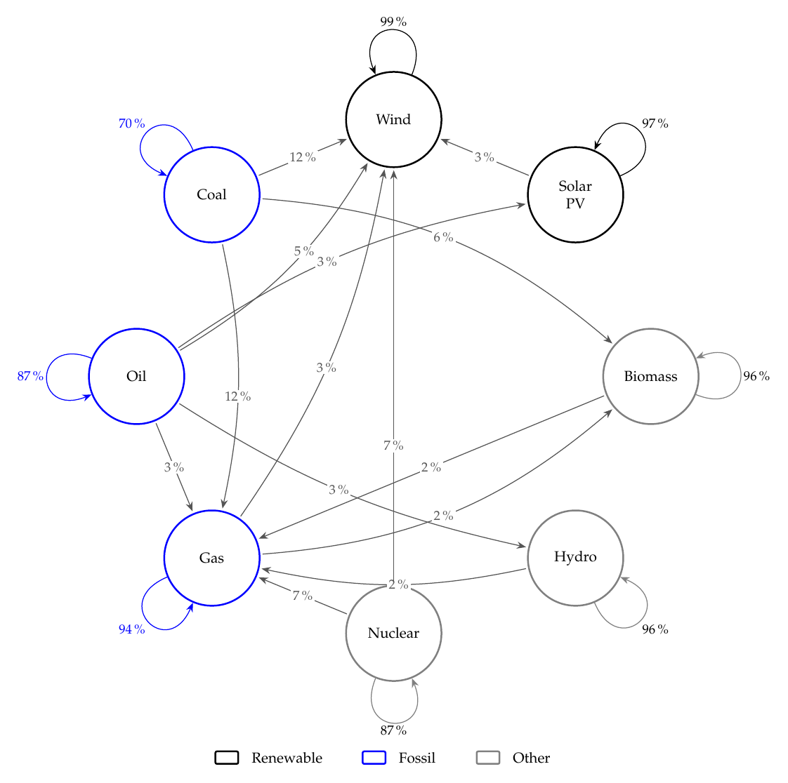
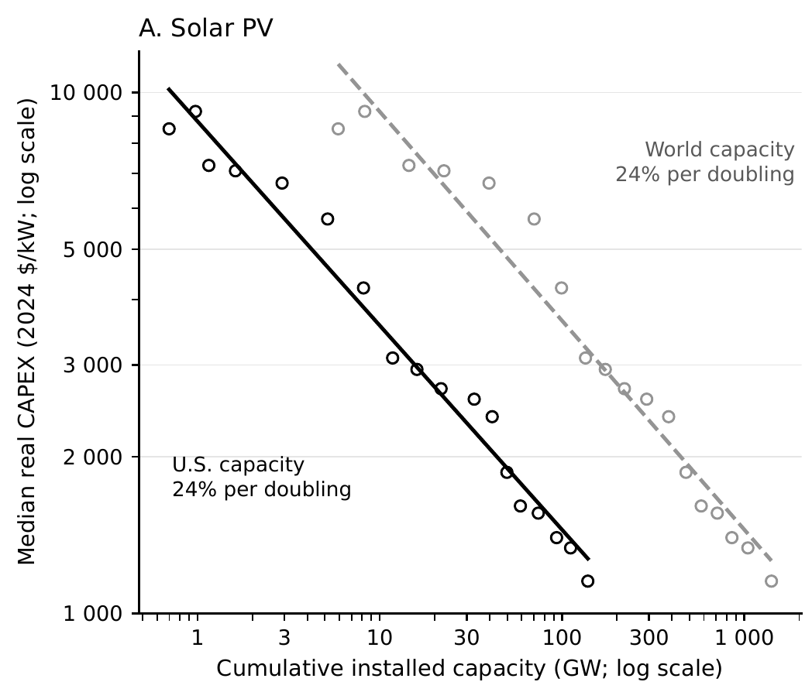

Working Papers

Is There a First-Mover Advantage in Renewable Development? Evidence from the US Power Sector
Selected Talks
Teaching
Introduction to Information Systems
WU Vienna · SS 2026
Basic Math for Data Science
WU Vienna · SS 2025
Academic Writing
WU Vienna · WS 2025